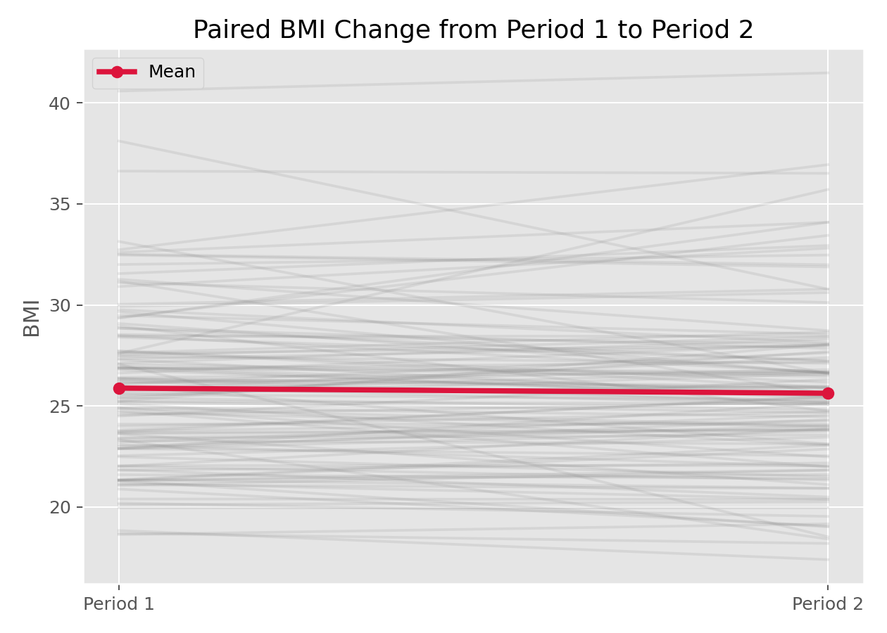

Wilcoxon符号秩检验
Wilcoxon符号秩检验（Wilcoxon Signed-Rank Test）
方法概览
1.1 一句话本质
它是配对 t 检验的非参数版：不去比差值的「平均大小」，而是比差值的符号和秩（谁大谁小的顺序），因此对偏态和异常值稳健。
1.2 定义
Wilcoxon 符号秩检验用于配对或单样本数据，检验差值（或与参照值之差）的分布是否关于 0 对称、中位数是否为 0，不要求差值服从正态分布。
1.3 它主要解决什么问题
- 研究问题：同一批对象两条件下的测量是否有系统差异（在不敢假设正态时）？
- 适用任务：配对设计的非参数比较、单组中位数与参照值比较。
- 常见医学场景：小样本前后测、评分/等级类结局的配对比较、差值明显偏态时。
1.4 直觉与类比
配对 t 用差值的「具体数值」，一旦有个别极端差（如某人降了 60 mmHg）就会被带偏。符号秩检验换个策略：把差值按绝对值从小到大排名，只看「往正方向的名次总分」和「往负方向的名次总分」谁更重。这样一个极端值最多贡献「最大的名次」，而不是它夸张的数值——顿时稳健许多。
核心思想与原理
2.1 它到底在解决什么根本困难
配对 t 检验依赖「差值近似正态」。小样本又偏态时，这个假设不可靠，t 检验的 p 值会失真。根本困难是：如何在不假设差值分布形状的前提下，检验「前后有无系统差异」？
2.2 关键洞察
只用差值的两点信息：符号（正/负）和绝对值的秩（大小排名），丢掉具体数值。若前后无差异，正差与负差应大小相当、秩也随机分布，于是「正差的秩和」与「负差的秩和」应接近；若一方系统地更大更多，其秩和会显著占优。用秩代替原值，正是它稳健、且在原假设下分布已知（与数据分布无关）的原因。
2.3 与朴素/相邻做法的对比
- 相对配对 t 检验：不要求正态、抗异常值；代价是丢弃部分信息，正态时功效略低。
- 相对符号检验：符号检验只用正负号，符号秩还用了「差的大小排名」，功效更高。
- 相对 Wilcoxon 秩和检验：符号秩用于配对，秩和用于两独立组，别混淆。
数学形式
3.1 核心公式
$$ W^{+}=\sum_{i:\,d_i\gt 0} R_i,\qquad d_i=x_{i,\text{后}}-x_{i,\text{前}} $$
其中 $R_i$ 是 $|d_i|$ 在所有非零差值中的秩。这个式子在说：把每个差值按绝对值大小排名，再把「正差值」对应的名次加起来，就是检验统计量。
3.2 推导脉络
- 去掉 $d_i=0$ 的对子，对 $|d_i|$ 排秩得 $R_i$。
- 计算正差秩和 $W^{+}$ 与负差秩和 $W^{-}$，二者之和为 $n(n+1)/2$。
- 原假设（差值关于 0 对称）下，每个秩以等概率落到正或负侧，故 $E[W^{+}]=\dfrac{n(n+1)}{4}$，方差 $\dfrac{n(n+1)(2n+1)}{24}$。
- 小样本查精确临界值；大样本用正态近似（含结点校正）。检验统计量常取 $W=\min(W^{+},W^{-})$，越小越偏离原假设。
3.3 参数与统计量含义
- $d_i$：配对差值（或与参照值之差）。
- $R_i$：$|d_i|$ 的秩。
- $W^{+},W^{-}$：正/负差的秩和；$W=\min$ 为常用统计量。
- p 值：原假设下出现如此不平衡秩和的概率。
3.4 关键假设（含违反后果）
| 假设 | 含义 | 违反后会怎样 | 如何粗查 |
|---|---|---|---|
| 对子独立 | 不同对子互不影响 | p 值失真 | 看设计 |
| 差值对称 | 差值分布关于中位对称 | 检验的解释变模糊 | 差值直方图 |
| 差可排序 | 差值可比大小 | 大量结点降低效力 | 看重复差值 |
手把手算例
6 名患者干预前后某评分的差值 $d$（后−前）= +8, +5, −2, +7, +6, +3。
一步步计算：
- 取绝对值：8, 5, 2, 7, 6, 3；按从小到大排秩：$2\to1,\ 3\to2,\ 5\to3,\ 6\to4,\ 7\to5,\ 8\to6$。
- 对应符号：$+8(秩6,+),\ +5(3,+),\ -2(1,-),\ +7(5,+),\ +6(4,+),\ +3(2,+)$。
- 正差秩和 $W^{+}=6+3+5+4+2=20$；负差秩和 $W^{-}=1$。
- 检验统计量 $W=\min(20,1)=1$。$n=6$ 时 $\alpha=0.05$（双侧）的临界值约为 1，判定规则「$W\le$ 临界值则拒绝」→ 处于拒绝边界（$p\approx0.06$，精确计算略大于 0.05）。
结论： 6 个差里 5 个为正、且正差的名次都靠前，秩和高度不平衡（20 vs 1），提示干预后评分系统性升高。注意这里唯一的负差（−2）绝对值最小、只贡献秩 1——一个「反方向但很小」的变化几乎不削弱结论，这正是秩方法稳健的体现。小样本时结论接近临界，说明还需更多样本。
数据形式与输入输出
5.1 适合的数据形式
- 自变量类型：配对条件（前/后等）。
- 因变量类型：连续或有序等级。
- 数据结构：配对两列或单列与参照值。
- 是否适合高维数据：否。
- 是否适合缺失较多数据：仅用完整对子。
- 是否适合删失数据：不适合。
- 是否适合重复测量数据：两时点；多时点用 Friedman 检验。
5.2 示例表格
| 患者 | 前 | 后 | 差 d | |d| 秩 | 符号 |
|---|---|---|---|---|---|
| 1 | 40 | 48 | +8 | 6 | + |
| 2 | 42 | 47 | +5 | 3 | + |
| 3 | 50 | 48 | −2 | 1 | − |
5.3 输入与产出
输入
- 输入数据：配对两列或差值。
- 关键变量：两次测量、对子标识。
- 需要预处理的内容：算差值、去零差、处理结点。
产出
- 模型对象/统计结果：$W$、p 值。
- 参数估计：Hodges-Lehmann 中位数差（可选）。
- 预测结果：无。
- 不确定性指标：中位数差的置信区间（可选）。
适用场景
- 适合：配对/单样本、非正态或小样本、有序结局。
- 不适合：两独立组（用秩和检验）、多时点（用 Friedman）。
- 使用前需要特别检查的点：数据确为配对、差值是否对称（影响解释）。
实现
常用包：
scipy
from scipy import stats
before = [40, 42, 50, 41, 44, 47]
after = [48, 47, 48, 48, 50, 50]
stat, p = stats.wilcoxon(before, after) # 配对
print(f"W={stat}, p={p:.3f}")
常用包：
stats
before <- c(40,42,50,41,44,47)
after <- c(48,47,48,48,50,50)
wilcox.test(after, before, paired = TRUE)
结果如何解读
- 核心结果看什么：$W$、p 值，以及中位数差方向。
- 每个主要参数如何解读：p 小说明前后中位数有系统差异；配合 Hodges-Lehmann 估计差的大小。
- 临床或医学意义如何表达：报告中位数变化及方向，而非均值。
- 常见误读：把它当成「比较均值」；忽略对称假设直接把结论说成中位数差。
假设诊断与稳健性
- 对称性：差值直方图看是否大致对称；严重不对称时结论应改述为「分布位置」。
- 结点与零差：大量相等差值或零差会降低功效，软件用近似校正。
- 稳健性：对异常值远比配对 t 稳健。
- 功效：正态时略低于配对 t；非正态时反而更优。
推荐可视化
- 配对连线图。
- 差值的点图/箱线图 + 0 参照线。
- 正负差秩和对比。
10.1 图像示例
下图展示配对样本 BMI 前后变化。

优势、局限与常见坑
优势
- 不依赖正态、抗异常值。
- 适用有序等级结局。
- 小样本有精确分布。
局限
- 丢弃部分数值信息，正态时功效略低。
- 依赖差值对称才好解释为中位数差。
- 大量结点/零差降低效力。
常见坑
- 与秩和检验（两独立组）混用。
- 忽略对称假设。
- 只报 p 值不报效应量（中位数差/HL 估计）。
与相近方法的区别
- 和配对 t 检验：配对 t 比均值、要正态；符号秩比中位数、更稳健。
- 和 Wilcoxon 秩和检验：符号秩用于配对，秩和用于两独立组。
- 和符号检验：符号秩额外用了差的大小排名，功效更高。
- 如何选择：配对且非正态 → 符号秩；配对且正态 → 配对 t。
医学研究中的典型应用
- 小样本前后测（如新疗法前后症状评分）。
- 有序量表的配对比较。
- 差值明显偏态的配对设计。
关键术语
- 秩（Rank）：数值按大小排序后的名次。
- 符号秩和（$W^{+}$）：正差值对应秩的总和。
- 中位数差：符号秩检验关注的位置参数。
- Hodges-Lehmann 估计：配对差中位数的稳健点估计。
- 结点（Ties）：相等的绝对差值，影响秩与近似。
相关方法
参考资料
- Wilcoxon F. Individual comparisons by ranking methods. Biometrics Bull. 1945;1(6):80-83.
- Hollander M, Wolfe DA, Chicken E. Nonparametric Statistical Methods. 3rd ed. Wiley; 2013.
- Conover WJ. Practical Nonparametric Statistics. 3rd ed. Wiley; 1999.